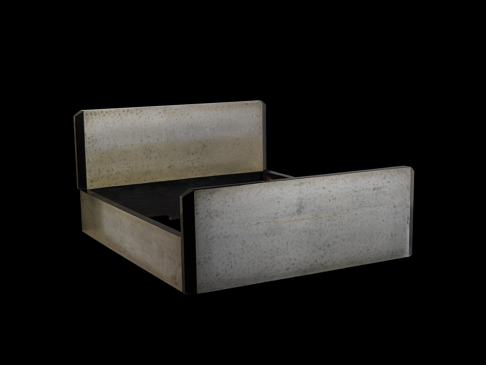

Как выбрать матрас

Сначала определитесь с размером и спальным местом
Стандартные размеры в РФ: односпальный 80×190–200 см, полуторный 120×190–200 см, двуспальный 160×200 см, king size 180×200 см. Измерьте не только кровать, но и проходы в комнате и дверные проёмы — матрас 180 см в узкую дверь не пройдёт. Если спите вдвоём, берите не уже 160 см: на 140 см двоим взрослым тесно. Высота матраса — 18–30 см; слишком высокий не подойдёт для кровати с невысоким изголовьем и для пожилых людей.
Жёсткость: не «чем жёстче, тем полезнее»
Жёсткость подбирают под вес, возраст и привычную позу сна:
- Мягкие и среднемягкие — для веса до 60 кг, для сна на боку (нужна амортизация плеча и бедра).
- Средние — универсальный вариант для большинства.
- Жёсткие и повышенной жёсткости — для веса от 90 кг, для сна на животе и для тех, кому врач рекомендовал жёсткую поверхность.
Детям и подросткам обычно подходит средняя жёсткость, а не «ортопедическая жёсткая», как часто советуют в магазинах. При проблемах со спиной выбор лучше согласовать с врачом, а не с продавцом.
Наполнитель: пружины или без них
Беспружинные — латекс, пенополиуретан (ППУ), кокосовая койра, мемори-пена. Подходят для веса до 70–80 кг, не скрипят, легче переворачиваются, дешевле. Минус — быстрее теряют форму, особенно дешёвый ППУ.
Пружинные делятся на два типа:
- Боннель (зависимые пружины) — устаревшая конструкция, дёшево, но проваливается по краям и «передаёт» движение партнёра.
- Независимые пружины (TFK, S500, S1000 и больше) — каждая пружина в чехле, лучше повторяет контуры тела. Для двуспальных матрасов это основной выбор.
Сверху пружинного блока обязательны слои наполнителя — кокос, ППУ, латекс. Чем толще эти слои, тем меньше вы чувствуете пружины.
Что проверить в магазине
- Полежите 10–15 минут в своей привычной позе, а не 30 секунд.
- Проверьте зоны жёсткости — у качественных моделей их 5–7, с более жёсткой серединой.
- Края: сядьте на край. Если он сильно проминается, матрас быстро «сядет» по периметру.
- Чехол: съёмный на молнии удобнее в уходе, но стирать его можно не всегда — уточняйте.
- Запах: резкий химический запах у нового матраса — повод отказаться.
- Гарантия и срок службы: нормальный срок — 10–15 лет, гарантия — от 2 лет. Смотрите, что именно покрывает гарантия: часто провал более 2 см считается нормой.
На что смотреть у продавца
Проверьте сертификат соответствия, состав наполнителей в сантиметрах (а не «усиленный слой латекса»), дату изготовления. Уточните условия возврата: по закону о защите прав потребителей матрас надлежащего качества вернуть сложно, поэтому важна возможность полежать на нём в шоуруме. Онлайн-покупка даёт право отказа в течение 7 дней, но только при сохранении товарного вида и упаковки — читайте условия конкретного магазина.
Вывод
Хороший матрас — это не самый дорогой, а подходящий по весу, позе сна и размеру кровати. Начните с жёсткости и типа пружинного блока, затем проверьте наполнитель и гарантию, и только потом сравнивайте цены. Не покупайте матрас «на вырост» и без примерки: 10 минут в магазине экономят годы дискомфорта.
Ссылки на маркетплейсы и сервисы ведут на проверенные предложения, для вас цена не меняется.
Найти на Маркете →